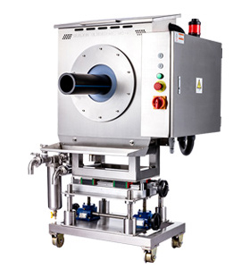
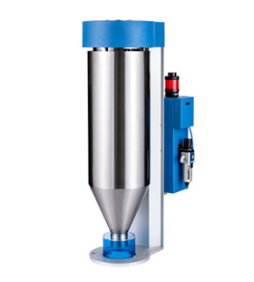

01 / 称重控制
米重色母称重控制系统
实时称量单位长度用料，自动闭环调节牵引与螺杆转速，把米重稳定压在下限附近——省下的是每天几百公斤原料。
Gravimetric Control System

广州海狮软件科技有限公司是一家专业致力于工业控制系统研发、生产、销售于一体的高新技术企业。
公司以高科技项目为主体、以高素质人才为支柱，专业领域覆盖硬件 EDA 开发、底层 DSP 开发、ARM 与上位机软件开发、电气控制系统设计、PLC 编程及机械设计——从一颗传感器到一整条挤出线的闭环，全部自己走通。
产品线围绕塑料管材挤出这一条主线展开：米重色母称重、超声波在线测厚、失重式喂料、多组分混料、管材表面缺陷检测、挤出云远程监控。测得准，才控得住；控得住，才省得下料。
我们以专业、专注、专心、专诚的企业精神，把最好的产品与最完善的服务带给客户。
从配料、喂料、称重到测厚、检测、远程监控，覆盖挤出全流程的关键控制节点。
实时称量单位长度用料，自动闭环调节牵引与螺杆转速，把米重稳定压在下限附近——省下的是每天几百公斤原料。

不停机、不破坏，绕管一周连续测壁厚与偏心，超差立即报警并回传控制端。

以失重法精确控制单位时间下料量，配方切换免调机，适配主料、色母、回料多路喂送。
多组分按比例自动称配，配方存档可追溯，杜绝人工配料的批次漂移。
一台挤出机双模头同步生产，两路米重独立闭环，互不抢料。
机器视觉在线扫描管材表面，麻点、划伤、气泡实时判定并标记。
产线数据上云，产量、米重、能耗、报警一屏总览，手机端随时看厂。
扎根行业、深入场景做产品设计与创新，为工业制造行业提供解决方案。
米重压不下去、壁厚忽厚忽薄、配料对不上批次——这些都是我们每天在解的题。